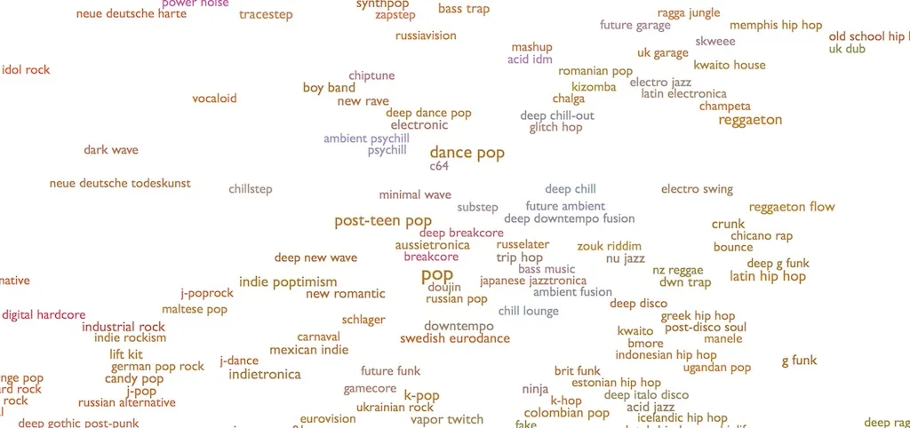

While data science and data alchemy overlap a great deal, especially as the roles continue to emerge and evolve, the main difference between them lies in the nature of the data they take in. Data alchemists work to transform data even before it is collected into something useable.
My favorite example of data alchemy at work takes place at Spotify, where data alchemist Glenn McDonald is quite literally inventing new genres of music. His job involves analyzing the ways people use music on Spotify (like what songs are written specifically to keep pets entertained while owners are away, or for ballet students to practice their dances to), and creating methods for grouping them in order to make them easier to access, for listeners to find what they’re looking for quicker, and for great new artists to be discovered faster.
Read more about McDonald’s work at Spotify and the data alchemy at work in transforming the music industry and generating new genres at Spotify For Artists.
As the example of Spotify demonstrates, data alchemists are especially concerned with determining what data to collect in the context of a problem to solve. In a world where companies can feel bogged down by the idea that they have “too much” data, data alchemists step in to put the puzzle together, even if it means throwing out some of the pieces.